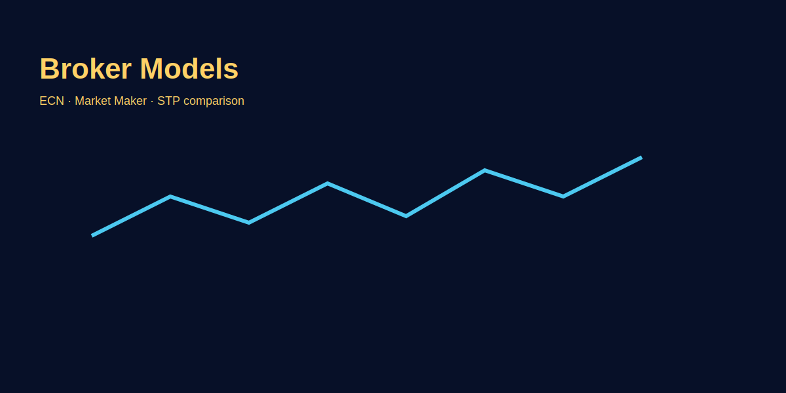

How Forex Brokers Work
Problem-based introduction
Choosing a broker and understanding its model matters for execution and costs. Is your fill coming from ECN, or is it an internalised market maker? Is the spread fixed or variable? We'll explain practically with GOLD (XAU/USD) examples.
Forex Broker Business Model Explained
Forex brokers = middlemen connecting retail traders to interbank forex market. You can't directly access LMAX, EBS, or prime brokers (minimum $10M+ accounts). Brokers aggregate liquidity, provide leverage, and charge via spreads/commissions.
Revenue Sources
- Spread markup: Buy interbank EUR/USD at 0.1 pip spread, sell to you at 0.8 pip. 0.7 pip markup = broker profit.
- Commission: ECN/STP charge $2–$7 per lot per side (round-trip $4–$14).
- Swap/overnight financing: You pay interest holding positions overnight; broker keeps spread between buy/sell swap rates.
- Inactivity fees: $10–$50/month if no trades (read T&C).
- Withdrawal fees: Some charge $10–$30 per withdrawal.
- B-book profit: Market makers profit from losing traders' losses (explained below).
Broker Models: A-Book vs B-Book
A-Book (STP/ECN Model) — Pass-Through
How it works: Your order routed directly to liquidity providers (banks: JP Morgan, Citi, Deutsche; or liquidity aggregators: LMAX, Integral). Broker doesn't take opposite side of your trade.
Revenue: Commission per trade or spread markup. Broker wants you to trade more (win or lose irrelevant to them).
Characteristics:
- Variable spreads (tight in liquid sessions, widen during news).
- Raw spreads 0.0–0.5 pips + commission.
- Level II pricing (market depth visible on some platforms).
- Slippage exists (real market conditions).
- Execution speed depends on liquidity provider connectivity (typically 10–50ms).
Example (GOLD): You buy 0.1 lot at 2020.00. Broker sends order to LMAX; filled at 2020.10 (0.1 slippage + $3 commission). You're in real market; broker earns $3, neutral on your profit/loss.
Best for: Profitable traders, scalpers (need tight spreads), high-volume traders.
B-Book (Market Maker Model) — Internalized
How it works: Broker takes opposite side of your trade internally. You buy EUR/USD → broker sells to you from own "book." No external routing (unless offsetting large positions).
Revenue: Your loss = broker profit (plus spread). If you lose $100, broker keeps $100 (minus any hedging costs if they offset large exposure).
Characteristics:
- Fixed spreads possible (1–3 pips EUR/USD, 0.5–1.0 GOLD).
- Instant execution (no waiting for external LP).
- No commission (profit from spread + client losses).
- Possible conflict of interest (broker profits when you lose).
- May restrict strategies (scalping, EAs, arbitrage banned in T&C).
Example (GOLD): You buy 0.1 lot at 2020.00 (fixed spread 0.6). Broker instantly confirms fill. If price drops to 2015.00, you lose $50 → broker gains $50 (simplified; they may hedge aggregate exposure).
Best for: Beginners (simple pricing), low-frequency traders, swing traders (fixed spreads reduce noise).
Hybrid Model (Most Common)
Reality: Most brokers use hybrid: profitable traders → A-book (external routing); losing traders → B-book (internalized). Algorithms classify clients based on profitability history.
Why? 80–90% retail traders lose; broker profits from B-book majority. Profitable 10–20% routed to A-book to avoid broker risk.
Red flag: If you become consistently profitable and suddenly face requotes, slippage spikes, or account restrictions → likely shifted from B-book to A-book OR broker trying to push you out.
Order Execution Flow (Step-by-Step)
ECN/STP broker (A-book):
- You click "Buy Market" GOLD 2020.00 on MT5.
- Order sent to broker server (latency: your internet + broker server distance = 20–100ms).
- Broker routes order to liquidity provider (LMAX, Integral, prime broker).
- LP matches order with counter-party in order book (bid/ask).
- Fill price confirmed: 2020.10 (0.1 slippage due to market movement during routing).
- Confirmation sent back to MT5 (total time: 50–200ms).
- Position appears in MT5; broker charges commission ($3 per 0.1 lot).
Market maker broker (B-book):
- You click "Buy Market" GOLD 2020.00.
- Order sent to broker server.
- Broker instantly confirms fill at 2020.00 (no external routing; instant execution).
- Broker now holds opposite position internally (short GOLD 2020.00 vs you).
- Position appears in MT5 instantly (total time: 10–50ms).
- Broker monitors aggregate exposure; may hedge large net positions with LP or leave unhedged if exposure manageable.
Liquidity Providers (LPs) — Who Are They?
- Tier 1 banks: JP Morgan, Citi, Deutsche Bank, Barclays, HSBC — provide deep liquidity, tightest spreads. Brokers with Tier 1 LP = best execution.
- Non-bank LPs: LMAX Exchange, Integral, Currenex — ECN platforms aggregating multiple banks. Popular with retail ECN brokers.
- Prime of Prime (PoP): Intermediaries between small brokers and prime brokers. Example: broker too small for JP Morgan direct; uses PoP to access JP Morgan liquidity.
Verification: Reputable brokers list LPs on website. Example: "Our LPs: LMAX, Citi, UBS." If not listed, likely market maker or low-quality hybrid.
Spread Types: Fixed vs Variable
| Type | Fixed Spread | Variable Spread |
|---|---|---|
| Definition | Same spread 24/5 (e.g., EUR/USD always 1 pip) | Spread changes with market liquidity |
| London session | 1.0 pip | 0.2–0.5 pip (tight liquidity) |
| Asia session | 1.0 pip | 0.8–1.5 pip (thin liquidity) |
| NFP news | 1.0 pip (but requotes likely) | 5–20 pips (reflects real volatility) |
| Broker type | Market maker (B-book) | ECN/STP (A-book) |
| Best for | Beginners, predictable costs | Scalpers, liquid-session traders |
Regulation & Safety
Top-tier regulators:
- FCA (UK): Strict capital requirements (£1M+), client fund segregation, FSCS protection up to £85K. Examples: IG, CMC Markets.
- ASIC (Australia): Strong retail protection, leverage capped 1:30 for majors. Examples: Pepperstone, IC Markets.
- CySEC (Cyprus/EU): Moderate regulation; common for EU brokers. Client funds protected by ICF up to €20K. Examples: XM, FxPro.
- NFA/CFTC (USA): Strictest; leverage capped 1:50, FIFO rule (first in, first out). Limited forex brokers: OANDA, Forex.com.
Red-flag jurisdictions: Offshore havens (Seychelles, Vanuatu, St. Vincent) — minimal oversight, no fund protection. Use only if you accept risk.
Verification: Check license number on broker site → search on regulator website (e.g., FCA register). Fake licenses common; always verify.
Broker Selection Checklist
- Regulation: FCA/ASIC/CySEC tier 1. Verify license.
- Execution model: ECN/STP for scalpers; market maker OK for swings. Check if hybrid.
- Spreads: EUR/USD < 1 pip avg; GOLD < 0.5 pip (ECN raw + commission).
- Commission: $3–$7/lot competitive for ECN. Calculate total cost: spread + commission.
- Slippage test: Demo 50 trades; measure avg slippage. Target < 0.3 pip on majors.
- Platform: MT4/MT5 standard. cTrader advanced. Check mobile app quality.
- Deposit/withdrawal: Multiple methods (bank wire, Skrill, Neteller, crypto). Withdrawal speed < 48hrs. Zero fees ideal.
- Customer support: 24/5 live chat. Test response time on demo queries.
- Negative balance protection: Can't lose more than deposit (EU/UK mandatory). Check if offered.
- Reviews: FPA (Forex Peace Army), Trustpilot. Look for withdrawal complaints, requote issues.
Common Broker Scams & Red Flags
- Withdrawal delays: "Verify account" loops; documents rejected repeatedly. Legitimate brokers process < 5 days.
- Bonus traps: "$500 free bonus!" but requires 50x volume to withdraw (impossible). Read bonus T&C carefully.
- Stop hunting: Your SL triggered, then price reverses instantly. Happens at market makers profiting from B-book losses. Solution: SL 10 pips beyond obvious levels.
- Requotes during profit: Close winning trade → "requote" → worse fill. Close losing trade → instant fill. Switch broker immediately.
- Platform manipulation: Price spikes on broker's MT4 not matching other brokers or TradingView. Record evidence, report to regulator.
- Pressure tactics: Account manager calls daily pushing deposits, "guaranteed returns." Legit brokers never guarantee profit.
Image-based examples (mandatory)
Common Mistakes
- Choosing broker solely on marketing without testing execution.
- Ignoring hidden fees like inactivity or withdrawal charges.
- Not verifying regulation license on official regulator website (fake licenses common).
- Falling for bonus traps with impossible withdrawal conditions (50x+ volume requirements).
- Using offshore unregulated brokers without understanding risk (no fund protection).
- Assuming fixed spreads always better (requotes during news kill advantage).
Pro Tips
- Collect execution reports and compare during your target trading hours.
- Prefer regulated brokers and clear T&Cs for client protection.
- Parallel demo test: Run same strategy on 2–3 broker demos for 50 trades; measure spread, slippage, execution speed. Choose best performer.
- Withdrawal test: Deposit $50, trade 1 micro lot, withdraw $50 immediately. Legitimate brokers process < 5 days. Scam brokers delay/reject.
- VPS co-location: If scalping, use VPS near broker server (London/NY). Reduces latency 50–100ms → less slippage.
- Regulation arbitrage: EU entity for safety (FCA/CySEC) but trade under offshore entity for higher leverage (1:500 vs 1:30). Some brokers offer both; risky but popular.
Risk Warning
Broker selection affects execution and risk; choose carefully and test on demo before committing funds.
SEO FAQs
- 1. ECN kya hota hai?
- ECN (Electronic Communication Network) routes orders to liquidity providers (banks, LMAX) with raw spreads 0.0–0.5 pips + commission. Best for scalpers; real market execution.
- 2. Market maker kya karta hai?
- Market makers take opposite side of your trade internally (B-book). Offer fixed spreads, instant execution, no commission. Profit from client losses + spread. May restrict scalping strategies.
- 3. Broker regulation kaise check karein?
- Broker website pe license number dekho → regulator website pe verify karo (FCA register, ASIC lookup). Fake licenses common; always verify. Top regulators: FCA (UK), ASIC (Australia), CySEC (Cyprus).
- 4. A-book vs B-book ka difference?
- A-book = broker routes orders to external LPs (no conflict). B-book = broker takes opposite side internally (profits from your losses). Hybrid = winning traders → A-book, losers → B-book.
- 5. Fixed vs variable spread — kaunsa better?
- Variable spreads tightest during liquid sessions (0.2–0.5 pip), wider during news (5–20 pips). Fixed spreads constant but may face requotes. Scalpers prefer variable (ECN); swings OK with fixed (market maker).
- 6. Slippage kaise check karein broker ka?
- Demo account pe 50 trades; expected fill vs actual fill note karo. Avg slippage < 0.3 pip good. > 1 pip = poor execution; switch broker.
- 7. Offshore broker safe hai?
- Offshore (Seychelles, Vanuatu) = minimal regulation, no fund protection, withdrawal risks high. Higher leverage (1:500+) attracts traders but risky. Use FCA/ASIC brokers for safety.
- 8. Broker ka revenue source kya hai?
- Spread markup, commission (ECN), swap charges, inactivity fees, withdrawal fees, B-book client losses. Reputable brokers transparent; check fee schedule before deposit.